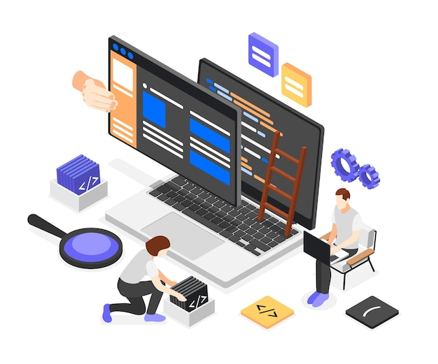
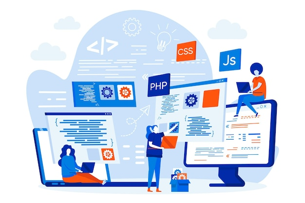
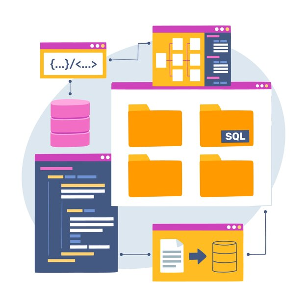

I am a passionate and dedicated web developer in creating interactive and user-friendly websites. I love to stay updated with the latest web technologies and enjoy taking on new challenges in the world of web development.
My goal is to design and build websites that not only look great but also provide a seamless user experience. I have a strong foundation in HTML, CSS, and JavaScript, and I am constantly expanding my skills to keep up with the ever-evolving web development landscape.
 Fresh graduates who understand Front-End Web development Ability to master HTML, CSS, and JavaScript to build the front-end interface of the website. Deep Understanding of Databases Knowledge in designing, managing, and interfacing with databases, which is essential for web applications that involve data storage and retrieval.
University of Mikroskil, Medan, Indonesia
Graduated: August 2022
Hactive8, Jakarta, Indonesia
Completed: September 2023
I have a strong passion for web development and enjoy creating interactive websites.
I stay up-to-date with the latest tech trends and gadgets.
I appreciate good design and love creating visually appealing user interfaces.
Awarded for outstanding contributions to web development and creating innovative websites.
2023
Recognized for exceptional website design and user experience in the industry.
2023